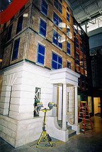
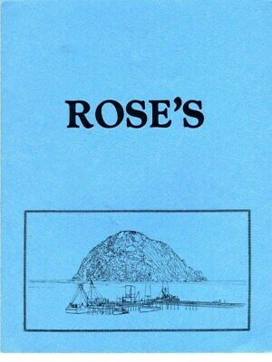

CANASTA


Two cars come flying down an otherwise empty street in a small city square. The leading car quickly turns into an alley while the following car slides into a dumpster. Smoke pours out from underneath the hood. A toe-headed tramp runs to the crashed car and opens the door. The driver's front teeth are stuck in the steering wheel. Blood is running down his chin.
Driver: I.. I... guess I never fixed a boiler... or had a dog tattoo.
Toe-headed tramp: My cousin Jeanie had a water boith (birth).